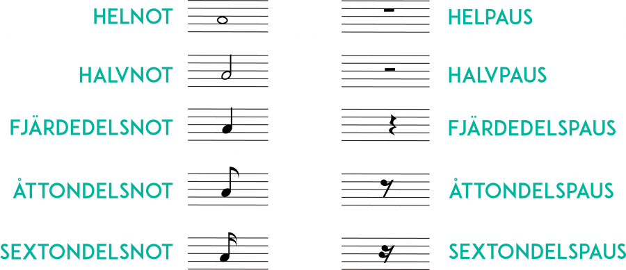

Nu kan du notvärden och vet hur länge olika toner ska låta. Men musik består inte bara av ljud – ibland ska det vara tyst också!
Vad är en paus?
En paus visar att du ska vara tyst och inte spela.
Precis som noter kan pauser vara olika långa. Pausens utseende visar hur länge du ska vara tyst.
Helpaus
Helpausen ser ut som en fylld rektangel som hänger under en linje i notsystemet.
Helpausen motsvarar en helnot – alltså tystnad i 4 slag.
Halvpaus
Halvpausen ser nästan likadan ut som helpausen, men ligger ovanpå en linje istället.
Halvpausen motsvarar en halvnot – alltså tystnad i 2 slag.
Kom ihåg: Tänk att helpausen är tung och därför hänger under linjen. Halvpausen ligger ovanpå.
Fjärdedelspaus
Fjärdedelspausen ser lite annorlunda ut - lite som en blixt.
Fjärdedelspausen motsvarar en fjärdedelsnot – alltså tystnad i 1 slag.
Åttondelspaus
Åttondelspausen ser lite ut som en sjua med en krok.
Åttondelspausen motsvarar en åttondelsnot – alltså tystnad i ett halvt slag.
Sextondelspaus
Sextondelspausen liknar åttondelspausen, men har två krokar istället för en.
Sextondelspausen motsvarar en sextondelsnot – alltså tystnad i en fjärdedels slag.
Jämför noter och pauser
Varje not har en motsvarande paus med samma värde. Här ser du alla bredvid varandra:

Kan du höra pausen?
Tryck på "Lyssna" och följ med. Först hör du fyra fjärdedelsnoter. Sedan hör du samma exempel igen, men en av noterna har bytts ut mot en paus.
Vilken paus tror du att det är?
Visa svar
Svar: En fjärdedelspaus. Varje ton är en fjärdedelsnot, och tystnaden varar lika länge som en ton – alltså en fjärdedelspaus.
Bra jobbat!
Nu vet du att en paus visar när du ska vara tyst och att varje paus har ett eget värde – precis som noterna.
Har du koll på pauserna nu?